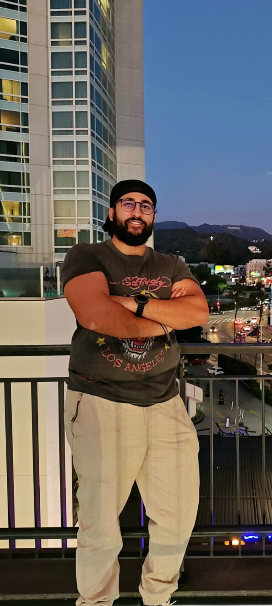

About the Developers
Built by the Sangat, for the Sangat.
Sangat Works was created by Rajan Singh and Jagdev Singh Kallha with one clear aim: to help Sikhs discover, support and recommend one another’s businesses, trades, services and professional skills across the UK.
Why We Built This
Keeping opportunity within the community.
Sangat Works was built because we saw a real gap: many Sikhs need trusted services, skilled tradespeople, professionals and business support, but do not always know where to find them within the community.
This platform exists to make those connections easier. Whether someone needs a builder, accountant, designer, coach, consultant, developer or local business, Sangat Works helps the community find and support one another.
Support Sikh Businesses
Help keep money, skills and opportunities circulating within the Sangat.
Build Trust
Profiles, reviews, verification badges and community recommendations help people make better decisions.
Create Opportunities
Sangat Works is designed to help businesses grow, professionals connect and younger members of the community discover pathways.
Meet the Developers
The people behind Sangat Works.

Rajan Singh
Founder & Software Developer
Fateh, I’m Rajan. I’m a 23-year-old software developer and the founder of S3D Systems, where I build custom software, websites, automation tools, 3D models and drone media projects.
I built Sangat Works because I believe technology should be used to solve real community problems. The goal is simple: make it easier for Sikhs to find, trust and support one another.
I am also building SayVah, a direct seva app designed to help connect volunteers, Gurdwaras and people who need support.
Jagdev Singh Kallha
Co-Founder | Founder & CEO of NXT Gen Sports Group
Jagdev is a lifelong advocate for grassroots football, equality, diversity and inclusion. He founded NXT Gen Sports Group to help create a more equitable and inclusive future for the game.
His mission is to empower the next generation of football talent by giving athletes from all communities better opportunity, representation and support.
Through Sangat Works, Jagdev brings that same passion for fairness, opportunity and community connection into a platform built to support the Sikh community.
Our Mission
Technology for real-world community support.
Sangat Works is not just a directory. It is being built as a growing community platform for business support, professional networking, trusted recommendations, Gurdwara-linked opportunities and future community-led features.
Completed So Far
Business profiles, directory search, reviews, ratings, verification badges, membership access, featured listings, map search and Young Professionals.
Coming Next
Gurdwara networking pools, jobs and opportunities, mentorship, community projects and more tools shaped by member feedback.
Built Independently
Sangat Works is being built independently with a community-first mindset: practical tools, real value and long-term support for the Sangat.
Join the Journey
Help shape Sangat Works.
Every profile, review, recommendation and shared opportunity helps the platform become more useful for the whole community.